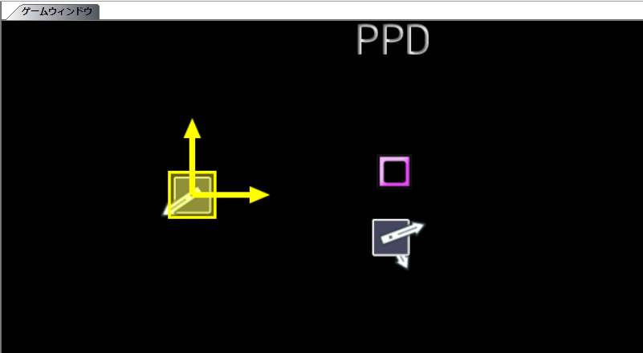

到上一步為止只完成了標記的放置。接下來設置標記的位置、角度和種類。
首先說明標記的擺放方法。
想直觀地擺放時，選中標記後在遊戲窗口內拖動擺放。

如果想固定標記可擺放的位置，可以使用網格。
顯示網格時，鼠標只能把標記擺放在網格的交點上。（用網格按鈕切換）

微調標記位置時，使用方向鍵（箭頭鍵）。（通常為1px，+Shift鍵為10px，+Control鍵為5px。可在設置中更改）
另外，要複製同種類上一個標記的位置時，按Ctrl+Q。
此外，使用位置角度讀取保存工具或幾何工具可以簡化擺放工作，但本指南面向新手，這裡省略。
接下來說明標記的角度。
選中標記後，在遊戲窗口內標記以外的地方拖動即可決定角度。
此時按住Shift鍵，可以將標記的角度限制為某個角度的倍數。（默認為10度。可在設置中更改）

另外，要複製同種類上一個標記的角度時，按Ctrl+R。
同樣，使用位置角度讀取保存工具或幾何工具可以簡化擺放工作，但本指南面向新手，這裡省略。
接下來說明標記的種類。
前面已經說明過，標記的種類取決於放置時的垂直位置。
要更改已放置標記的種類，按住Shift拖動標記，在想要的種類對應的垂直位置放下即可。
按住Ctrl拖放會複製標記。
或者，通過範圍選擇用Ctrl+C複製後再放置標記，就會複製到放置的位置。（別忘了用Ctrl+Shift+C清空複製緩衝區）
說明長按（或HOLD）的製作方法。
在長按開始點（HOLD開始點）放置標記。
再在長按結束點（HOLD的情況下，在下一個同種類標記之前）放置標記，然後用範圍選擇選中這兩個標記。
此時按Ctrl+F，就會變成長按（HOLD）。
在選中長按的狀態下按Ctrl+Shift+F，即可將其拆分。

標記的設置到此結束。
下一步